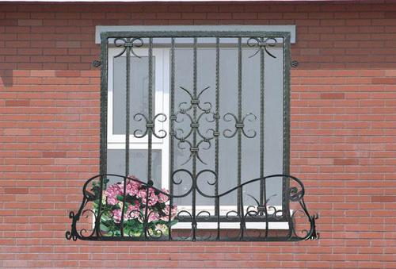

Who Makes Wrought Iron Railings in Bickleywood Cheshire England SY14 8
Wrought Iron Gates Bickleywood Cheshire England SY14 8

Why Wrought Iron instead of a Wood Entrance or Steel Framed Entrance? That is just a question of your personal taste, and also the appearance you wish to achieve. One of the possible benefits of Wrought Iron entrances is they do not obstruct your perspective out past them, or block sunlight being available in. In reality, it's not a inquiry which is better, more so, just which alternative you will discover a lot more pleasing.
A Brief History And Walk Around Cordwainer Ward
Although they do not have so much of a physical presence today, the Wards of the City of London are centuries old partitions of the City into individual areas with their own administrative, financial and governance functions. The history of the Wards goes back to Medieval times with their origins almost certainly being earlier. They were probably the ancient estates within the City of someone in a role similar to a lord of the manor and had some level of civil and criminal jurisdiction over the Ward.
Documents written in the 12th Century refer to the Ward system and to the names of Alderman of the Wards who held a largely hereditary position with the role of Alderman becoming an elected role during the reign of Edward III (1327 – 1377), by which time the Wards appear to have assumed names similar to those of today.
In walking and exploring the City of London, I find it is the Streets, Churches and Wards that provide tangible contact with London’s long history.
One such ward is Cordwainers Ward, just to the east of St. Paul’s Cathedral and to the south of Cheapside. The following map from 1755 shows Cordwainer Ward, south of Cheapside with boundary wards shown along the edge. Breadstreet Ward is not marked, but is to the left, the boundary being the street of the same name.
Cordwainer Ward is one of the few examples of where wards have been named after the trade practiced by the inhabitants. The name is derived from the early English word “cordwaner” meaning a worker in “cordwane” which was leather from the town of Cordova in Spain and the name dates back to around the 12th / 13th Century.
Shoe manufacture and sale was one of the key trades within the ward and in Henry 2nd’s reign (1154 to 1189) the sale of shoes was only allowed in the shoe market in Cheap between Cordwainer Street and Soper Lane (now Bow Lane and Queen Street).
Cordwainers were among the first of the craft organisations having received ordinances from the Mayor of London in 1271. Despite holding a prominent position in the early trades of London, in 1303 the Cordwainers were the subject of public complaints of fraud, in that they were using inferior leathers mixed in with the superior Cordova leather. There was also an ongoing rivalry with the Cobblers, and the Cordwainers were forbidden to mend shoes and the Cobblers forbidden to make them.
The craft is now commemorated by a Cordwainer statue erected in 2002 by the Ward of Cordwainer Club, which can be found in Watling Street, and is a good place to start a walk exploring Cordwainer Ward.
The plaque reads ” You are in the Ward of Cordwainer which in medieval times was the centre of shoe making in the City of London. The finest leather from Cordoba in Spain was used and gave rise to the name of the craftsmen and the Ward. The Cordwainer statue was erected in 2002 to celebrate the century of the Ward of Cordwainer Club.”
Records of the names of the Aldermen of Cordwainer Ward go back to circa 1115 and appear to be continuous to the present day. The trades of each Alderman demonstrate the range of activities carried out in the Ward over the centuries, for example:
1313 Simon Corp, Pepperer
1375 John de Northampton, Draper
1599 William Craven, Merchant Taylor
1687 John Gardner, Skinner
1774 George Hayley, Armourer
1784 Brook Watson, Musician
1875 George Swan Nottage, Spectacle Maker
Opposite the Cordwainer statue in Watling Street is the site of the headquarters of the London Salvage Corps. Formed in 1865, the London Salvage Corps was effectively a private service operated by the London insurance companies. Their primary task was salvage both during and after a fire. During a fire, the Core would try to protect and recover goods and property and after a fire the Corps was responsible for the salvaged goods and property if insured, or until the insurance position could be ascertained.
The London Salvage Core operated until 1982. The change in building usage in the City from warehousing to offices meant that the risk of fire was reduced and there were no longer goods to be salvaged.
Watling Street is considered to be one of the oldest streets in the city and originally a Roman road running from Dover through to Chester. Watling Street outside of London can easily be traced on Ordnance Survey maps, or by driving the route. Long straight roads passing through Dunstable, Towcester, to the east of Rugby, between Nuneaton and Hinckley clearly demonstrate the Roman origins of this street.
On approaching central London, the original Watling Street passed down Edgware Road to the area where Marble Arch is currently located where it split into two. One branch headed to Thorney Island (Westminster) whilst the other branch ran along Oxford Street and Holborn, crossing the Fleet and then entering the City by the New Gate. It met up with the current City Watling Street just south of Bow Lane. The part leading up to St. Paul’s is a relocation of the original route following a fire in 1136 after which a market had sprung up on the course of the old road.
Looking up Watling Street towards St. Paul’s Cathedral (Cordwainer Ward ends and Breadstreet Ward starts roughly where the red van is located):
Running across Watling Street is Bow Lane, here leading up to the church of St. Mary-le-Bow and Cheapside.
Bow Lane is a good example of how street names have changed over the centuries.
The name Bow Lane came from the church, but was not used until the middle of the sixteenth century. Prior to being named Bow Lane, the lower part was called Cordwainer Street with the upper part approaching Cheapside named Hosier Lane due to the hosiers who lived in the lane.
The section of Bow Lane that originally extended south of Cannon Street, is now Garlick Hill.
The following photo shows the church of St. Mary-le-Bow. I explored the church in a post which can be found which included my father’s photos showing the devastation in the area following the last war.
William Maitland writing in 1756 records Wren’s observations on the discovery of a Roman Causeway during the rebuilding of St. Mary-le-Bow:
“The church stood about 40 feet backwards from the high street, and by purchasing the ground of one private house not yet rebuilt he was enabled to bring the steeple forward so as to range with the street houses in Cheapside. Here, to his surprise, he sunk about 18 feet deep through much ground and then imagined he was come to the natural soil, and hard gravel but upon full examination, it appeared to be a Roman causeway of rough stone, close and well rammed, with Roman brick and rubbish at the bottom, for a foundation and all firmly cemented. This causeway was four feet thick. Underneath this causeway lay the natural clay over which that part of the city stands, and which descends at least 40 feet lower. He concluded then to lay the foundation of the Tower upon the very Roman Causeway, as most proper to bear what he had designed, a weighty and lofty structure.”
This account really brings home that everything we see in London today is built on centuries of earlier construction, and it is fascinating to stand in Cheapside, look at the tower of St. Mary-le-Bow and if Wren was right there is a Roman causeway below, supporting the weight of the tower.
As well as St. Mary-le-Bow there were a number of other churches in Cordwainer Ward.
Walk back down Watling Street, turn left up Queen Street then across to Pancras Lane. Before the Fire of London there were two churches in this short lane which gives an indication of the population densities in the area (in March 1587, Cordwainer Ward contributed 301 fully armed and equipped men following the request of Queen Elizabeth 1st for soldiers from the City during one of the many invasion scares during the Tudor period. The full table of all City Ward contributions is in my post on ). William Maitland states that in 1631 there were 2238 persons living in the Ward.
Walk down Pancras Lane and we come to the site of St. Pancras Church. This was one of the churches destroyed in the Great Fire that was never rebuilt although the graveyard continued to be used until 1853. The land was left derelict for many years, but was recently purchased by the City of London and transformed into a small garden.
As part of the transformation, a competition was held and the winning design included the installation of a range of beautifully carved benches with their designs based on the Romanesque architecture of the church rising afresh from the ground after the Great Fire.
The benches were carved by students from the City & Guilds of London Art School.
The background to the design of the garden and the carved benches can be found on the website of .
Writing in 1910, Walter Besant states that the graveyard of St. Pancras “bears a great similarity to all that is left of the others; it is covered with dingy gravel and decorated by blackened evergreens. the iron gate bears a little shield telling that it was erected in 1886. There are one or two tombs still left.”
Continue the short distance down Pancras Lane to where it turns right into Sise lane and this is the location of another church lost in the Great Fire, the church of St. Benet Sherehog. There are two plaques recording the church. On the left of the gates, just above the silver bollard is a reproduction of the original stone slab that reads: “Before the dreadful Fire, Anno 1666, stood the church of St. Benet Sherehog” The blue plaque on the right of the gates records the church on one of the standard city plaques.
There are a couple of possible sources for the name St. Benet Sherehog. The church was originally dedicated to St. Osyth, however it was repaired by one Benedict Shorne, or Sherehog in the reign of Edward II and as a result of the repair the benefactor gave his name to the church. An alternative source is from the hogs that may have wallowed on the shores of the Wallbrook, or the ditches that ran into the stream.
The most frequent reference is to Benedict Shorne, but as with many of the street and church names in the city, the real source of the name is hidden in the centuries that have passed. It is an old name, appearing as early as the twelfth century.
Again writing in 1910, Walter Besant states there remains “the railing and low wall were put up in 1842. Within the enclosure stands a tomb over the Family Vault of Michael Davison, 1676”. At the time of his death, Michael Davison left a charitable gift to provide £5 per annum for keeping his family vault in repair.
The Museum of London excavated the graveyard of St. Benet Sherehog between 1994 and 1996 as part of the No. 1 Poultry development. There were 274 burials excavated and following analysis of 270 of these, 39 were identified as being from the Medieval period.
At the end of Pancras Lane, the street bends to the right to all that remains of Sise Lane.
Sise Lane is a corruption of St. Osyth, a Mercian Queen reputedly martyred around the year 700.
From the end of Sise Lane we can walk south along Queen Victoria Street. We cut across Queen Street which runs down towards Southwark Bridge and north to Cheapside. Queen Street is another that has changed name. Originally known as Soper Lane, or Soapers Lane from the soapmakers who lived in this area. The name was changed to Queen Street soon after the Fire of London in honour of the wife of King Charles II, Queen Catherine of Braganza.
Queen Street / Soper Lane appears to have a history for markets. In 1297 there was an evening market here called the “New Fair”, set-up without the approval of the mayor by “strangers, foreigners and beggares” and was the scene of much “strife and violence”. It was soon shut down. It was later the market place for the Pepperers, then the Curriers and Cordwainers and in the reign of Queen Mary it was a street known for shops selling pies.
Not much of that in Queen Street today:
Continuing down Queen Victoria Street we come to the church of St. Mary Aldermary. An old church with written references back to the thirteenth century, but probably older. The church was repaired after the Great Fire and considerably restored in 1877 when the nearby church of St. Antholin was closed as one of the many 19th century city church closures. The funds generated by the sale of the site were used to restore St. Mary.
Wren’s restoration after the Great Fire was unusual in that it was not based on a new design. The funds for restoration came from one Henry Rogers who left a legacy of £5,000 for the restoration of the church. His widow required that the restoration should be an exact copy of the original Gothic style of church. St. Mary Aldermary and St. Alban, Wood Street are the only known examples of Wren’s restoration based on the original church.
Opposite St. Mary Aldermary is the junction of Cannon Street and Queen Victoria Street. These two streets have had a significant impact on Cordwainer Ward.
Construction of Queen Victoria Street commenced in 1867 to provide a direct route from the Embankment through to Mansion House. Cannon Street was extended through Cordwainer Ward in 1853-4 to reach St. Paul’s Cathedral. The following two maps provide a very clear view of the impact of these two streets. Firstly the 1755 map of the ward:
Now the Ward in the early part of the 20th Century showing the impact of Cannon Street and Queen Victoria Street:
The development of these two streets had a considerable impact on Cordwainer Ward, sweeping away a number of original streets and carving into two, many streets that had originally run down to Thames Street. It is this layout of the Ward that we see today.
This is how Queen Victoria Street appeared in the first decade of the 20th Century.
Much of Queen Victoria Street has changed considerably since this photo was taken, however in the above photo the church of St. Mary Aldermary is on the left and there is an ornate building on the right, curved with Queen Victoria Street passing to the left and Cannon Street on the right. This is one of the few buildings to have survived and is still much the same as when the above photo was taken as can be seen in the following photo:
A brief walk around the history of Cordwainer Ward. One of the smaller Wards of the City of London, but with a fascinating history of which traces can still be found despite the process of continual change which is also part of London’s heritage.
The sources I used to research this post are:
- London, The City by Sir Walter Besant published in 1910
- The History of London from its Foundations to the Present Time by William Maitland published in 1754
- Cordwainer Ward in the City of London by A. Charles Knight published in 1917
- Medieval Towns – The History of London by Henry B. Wheatley published in 1922
- Stow’s Survey of London . Oxford 1908 reprint of 1603 edition
- London Churches Before The Great Fire by Wilberforce Jenkinson published in 1917
Share this:
Why Wrought Iron as opposed to a Wooden Entrance or Metal Mounted Gate? One of the feasible benefits of Wrought Iron entrances is they do not obstruct your sight out past them, or obstruct sunshine coming in. It is absolutely great for your brand name brand-new Wrought Iron gate to function and even look gorgeous the day it's mounted, yet if the products used are not the finest, our freshly added road charm could possibly be brief lived.
Wrougnt Iron Gates near Bickleywood Wrougnt Iron Gates near Bickleywood